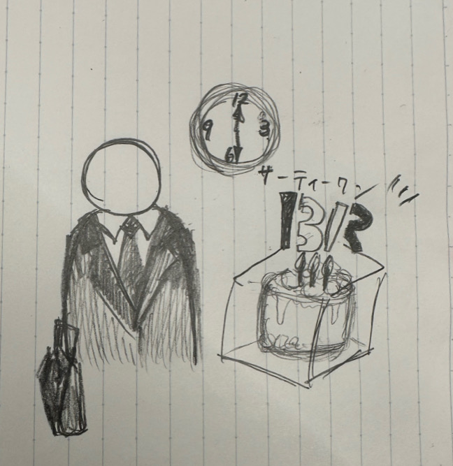

〖観察〗
仕事終わりにサーティワンのケーキを片手に？！！！！

私の中で印象に残っている人は大学帰りに最寄り駅で見た男性です。
男性は仕事帰りのようで、スーツを着ていましたがその手には サーティワンのアイスケーキが入った箱を持っていました。
彼女さんへのものなのか、奥さんか、子供さんか、、、、、 それとも、自分自身のものなのか(甘党系男子！！？)
詳細は分かりませんが、可愛いなぁとほっこりしました。